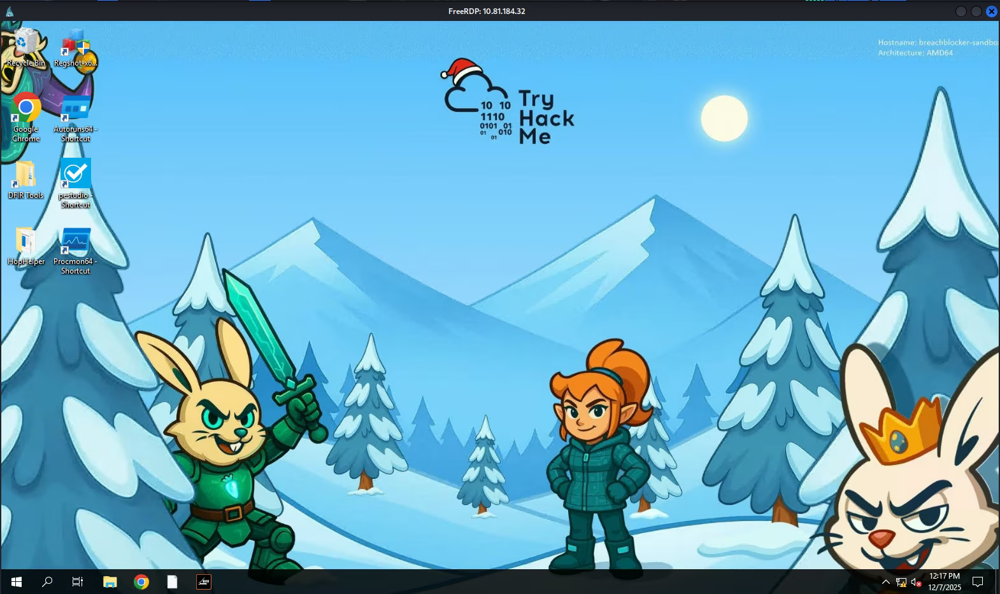
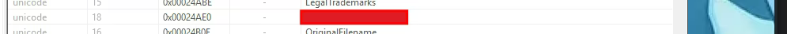
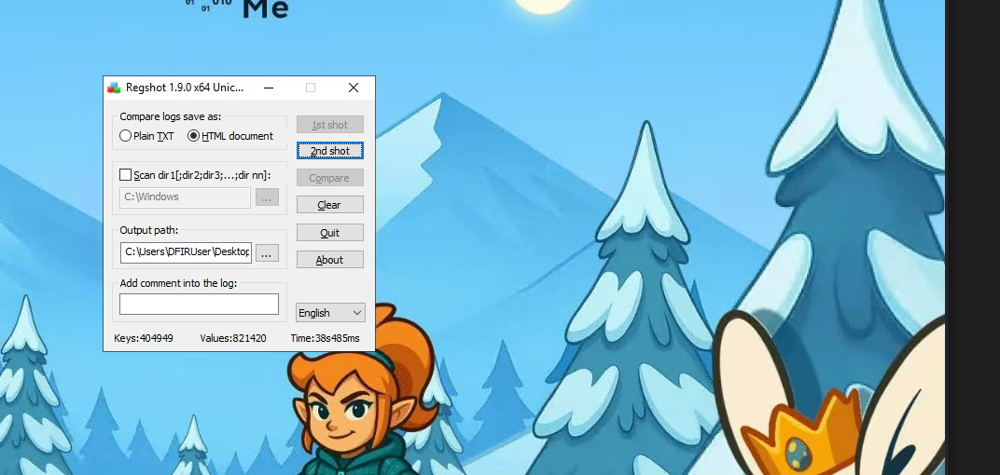
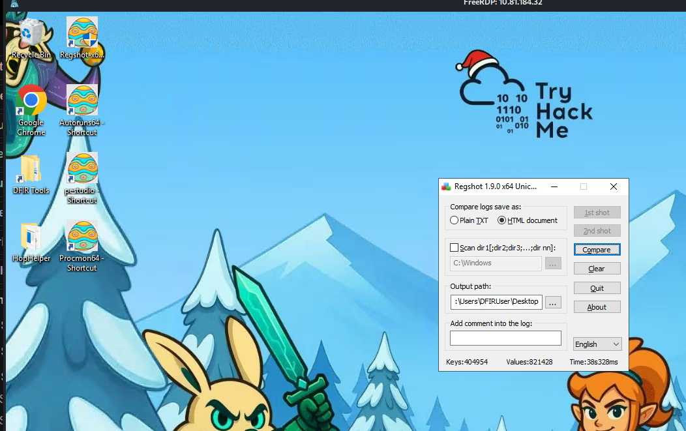
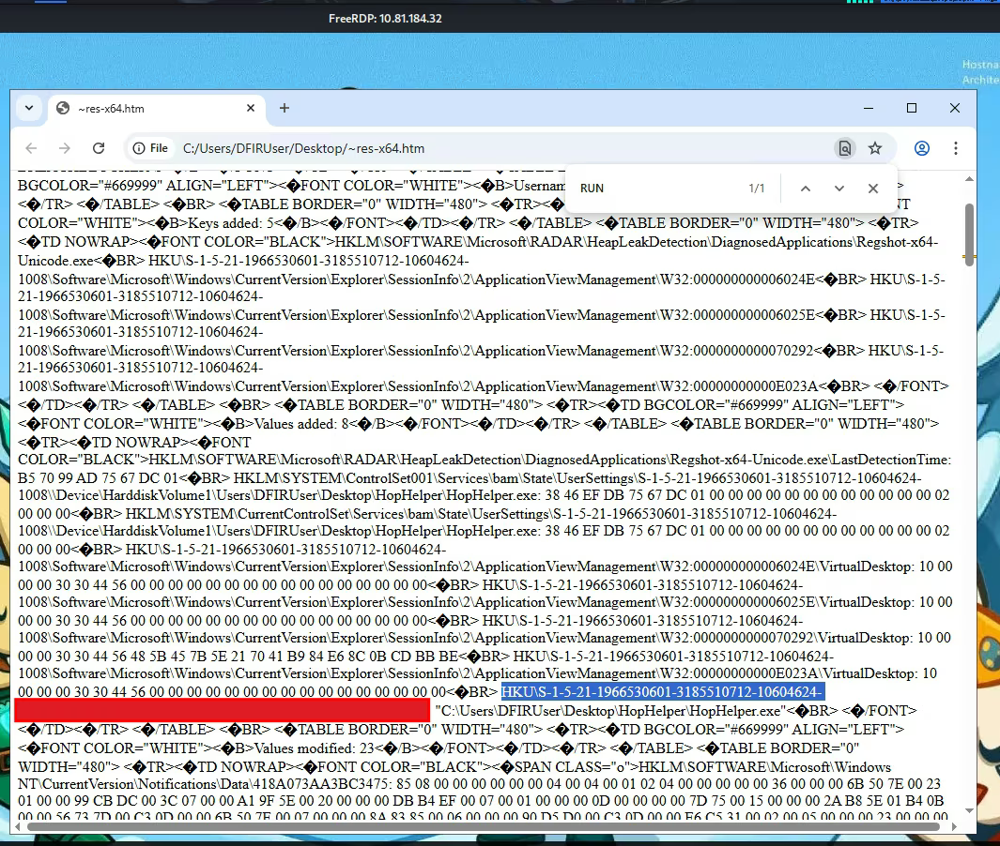
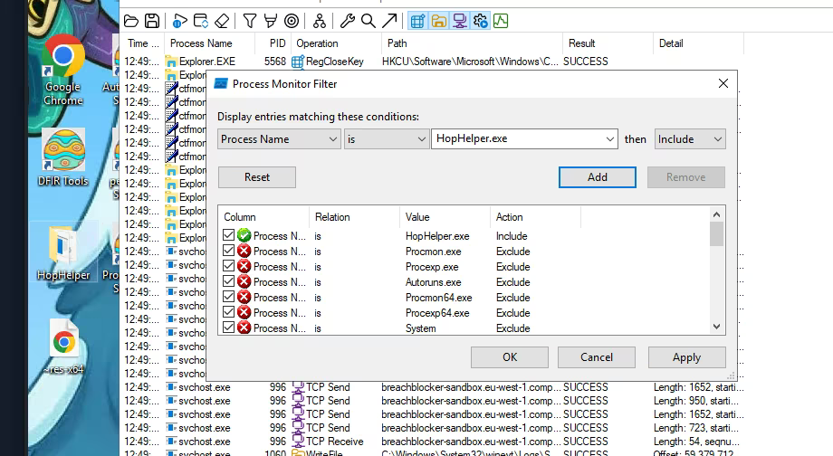
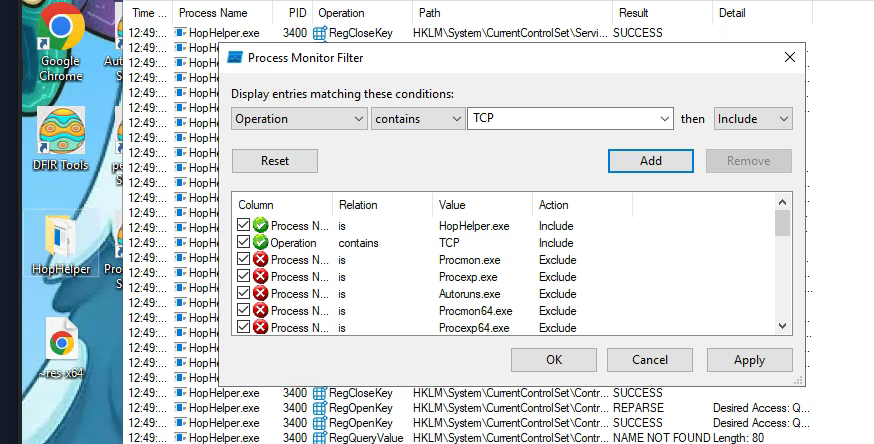
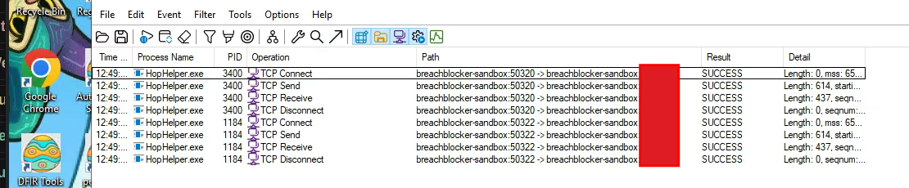

Malware Analysis - Egg-xecutable (AoC 2025)
In this write-up, we act as malware analysts. Our goal is to investigate a suspicious executable named HopHelper.
We will perform Static Analysis (examining the file without running it) and Dynamic Analysis
(observing the malware's behavior while it runs) to understand its persistence mechanisms and network communications.
Link to the room: https://tryhackme.com/room/malware-sandbox-aoc2025-SD1zn4fZQt
1. Connection & Static Analysis
First, I connected to the Windows sandbox machine using Remote Desktop Protocol (RDP).

Before running potentially dangerous software, it's crucial to perform Static Analysis.
I opened the HopHelper executable located in the folder using PeStudio.
This tool allows us to see file metadata, imports, and strings without executing the code.
From PeStudio, I obtained the SHA256 hash of the file. I also checked the strings (readable text embedded in the binary) and found the first flag hidden there.

Flag 1: [REDACTED]
2. Registry Analysis (Regshot)
Now it's time for Dynamic Analysis. I wanted to see if the malware modifies the Windows Registry to stay on the system (Persistence). For this, I used a tool called Regshot.
How it works: Regshot takes a "snapshot" of the registry before we run the malware, and a second snapshot after. Then it compares them to highlight the differences.
I took the 1st shot (clean state).

Next, I executed the malware HopHelper.exe and took the 2nd shot.

Finally, I clicked "Compare". The results showed that the malware added a new value to the Registry. Searching for keywords like "HopHelper" or "Run", I found that it added itself to the Run key. This means the malware will start automatically every time the user logs in.

3. Process Monitor Analysis
To understand what the malware does in real-time (files accessed, network connections), I used Process Monitor (ProcMon). Since ProcMon captures thousands of events per second, filtering is essential.
I started ProcMon, ran the malware again, and waited a minute to capture the data. Then I stopped the capture.
I applied a filter: Process Name is HopHelper.exe. This hides all system noise and shows only what our malware is doing.

4. Network Communication
We also want to know if the malware "phones home" (connects to a Command & Control server).
To find this, I added another filter in ProcMon: Operation contains TCP.

The results revealed the network activity. We can clearly see the malware initiating TCP connections.

By looking at the "Path" or "Detail" column, we identified the domain the malware was communicating with:
breachblocker-sandbox.
This answers the final question about the C2 server address.